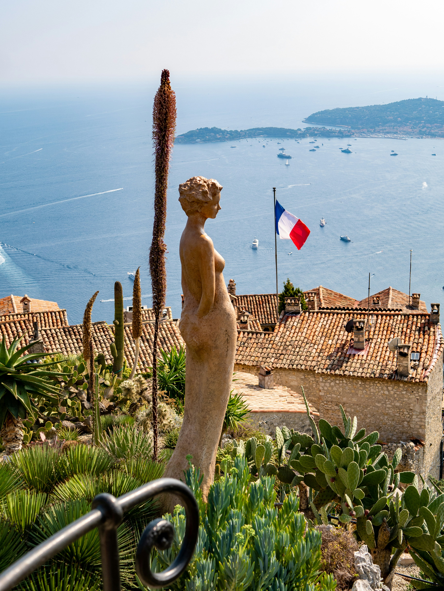

🇫🇷 Côte d'Azur Itinerary
June 11 - June 16 (5 nights)

Overview
Dates: June 11 - June 16 (5 nights)
Arrival: Flight from Madrid via Business Class Iberia
Base: Central Nice Airbnb - 27 Rue Alphonse Karr, Nice, Provence-Alpes-Côte d'Azur 06000
Thursday (June 11): Arrival & Seaside Dinner at Le Plongeoir
1:00 PM — Check into Airbnb
4:00 PM — Relax and walk around city
7:00 PM — Dinner at Acchiardo
9:00 PM — Bar Crawl with Beer&Bash ☑️ (GYG)
- Cheap on Getyourguide
Friday (June 12): Beach Day & Bar Crawl
9:00 AM — Breakfast at Café Marché or Paper Plane Café
- Great avocado toast and iced lattes
11:00 AM — Beach club: Blue Beach or Plage Ruhl
3:00 PM — Back to Airbnb to Relax
7:00 PM — Dinner at Le Comptoir du Marché
Saturday (June 13): Ferry to Saint-Tropez Day Escape
7:30 AM — Take Private Car There ☑️ Ride Confirmation
11:30 AM — Arrive in St Tropez
11:45 AM — Walk the Port + Old Town
- Stroll through La Ponche, Pastel streets, small galleries, get light lunch
3:00 PM — Reservation: Nikki Beach St. Tropez ☑️ Ticket Confirmation
8:00 PM — Take Private Car back ☑️ Ride Confirmation
- So we get no chop on way back and a little later departure than ferry
Sunday (June 14): Monaco Day
MORNING
9:15 AM — Helicopter to Monaco (BRING PASSPORT) ☑️ Flight Info
8:30 AM — Arrive in Monaco walk downhill toward: Port Hercule
- Yachts everywhere
9:00 AM — Espresso stop near the marina
10:00 AM — Walk toward Larvotto / Monte-Carlo Beach side
10:30 AM — Relax and watch the boats pass
AFTERNOON
12:00 PM — Lunch at Cafe De Paris Monte-Carlo (Casino Square)
2:00 PM — Explore Casino Square
2:30 PM — Monte-Carlo Casino
3:00 PM — Hotel de Paris Monte-Carlo
3:30 PM — Cafe de Paris Monte-Carlo
4:00 PM — Luxury boutiques like Cartier Monaco
5:00 PM — Walk uphill for panoramic views
- Look over Port Hercule
7:00 PM — Return to Casino Square (Night time vibes)
10:00 PM — Return to Nice
Monday (June 15): Cannes Beach Clubs & Rooftop Chill
8:00 AM — Day trip to Cannes (40 min train)
8:45 AM — Walk by the Carlton Cannes and take photos
9:00 AM — Coffee at Cafe nearby like Amamo or Saddle
10:00 AM — Bakery at La Boulangerie du Midi
12:00 PM — Get lunch followed by Spritz and find a square to sit at and just watch
2:30 PM — Go to meeting point for La Guerite (The Port Pierre Canto from Cannes)
3:30 PM — La Guerite Reservation ☑️ Confirmation Info
6:00 PM — Back to Nice
9:00 PM — Nightclub in Nice
Tuesday (June 16): Flight to Milan ✈️
6:00 AM — Go to Airport
9:00 AM — Flight to Milan